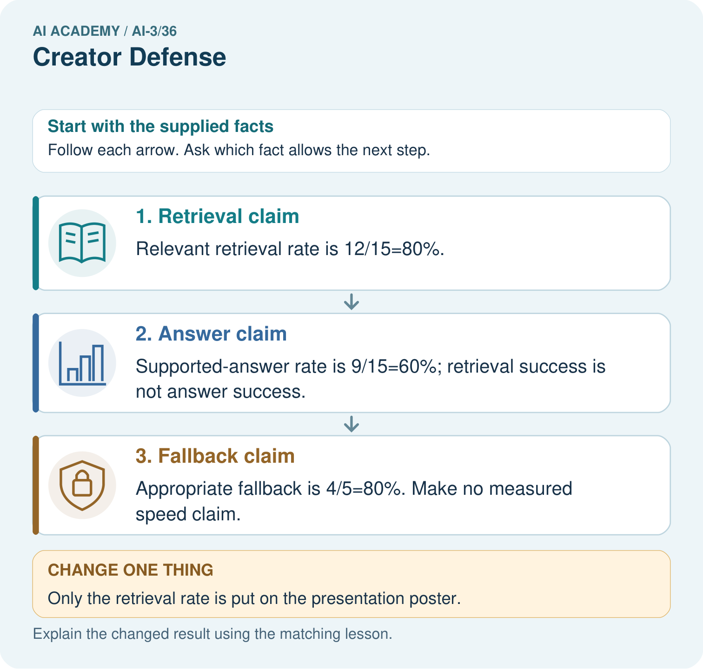
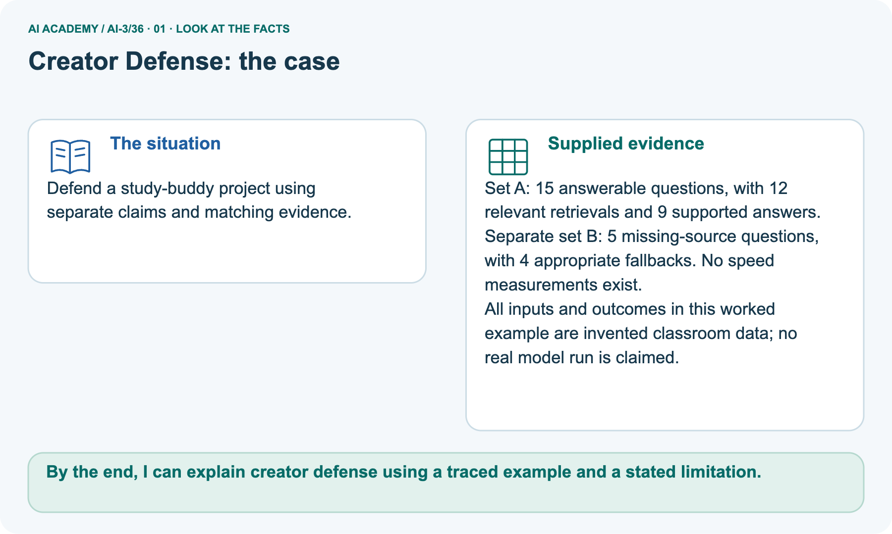
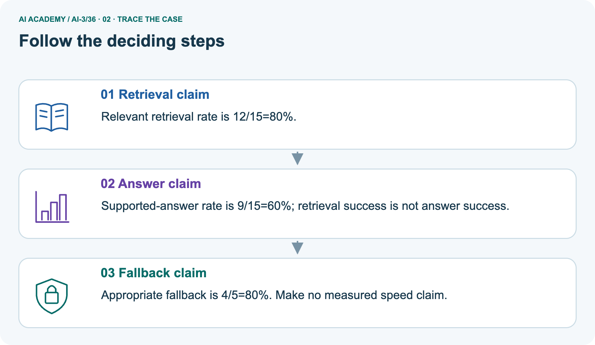
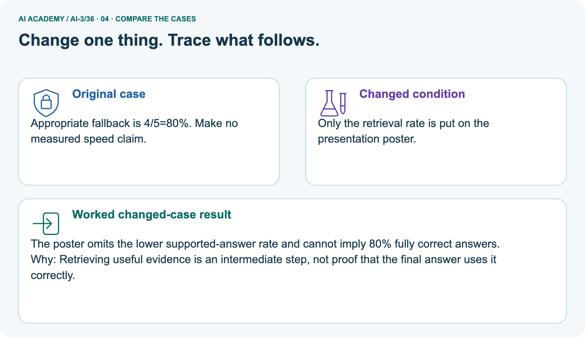
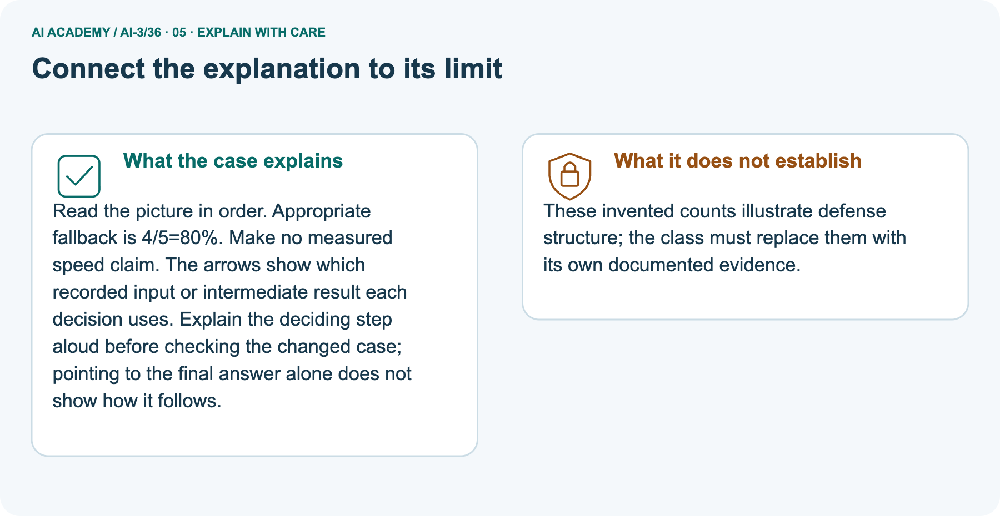
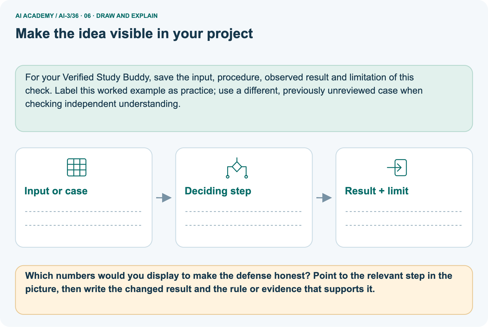

AI Academy · Level 3 · Grade 8 · Week 36 · Workbook
Creator Defense
Learn to understand, design, build, test and explain AI systems responsibly.
Project: Verified Study Buddy
THE CONNECTED WEEK
One connected creator-defence record.
Explain the architecture, trace rates, audit overclaims and design a revealing question.
Keep one habit: Keep source versions, outcome units, denominators, failure evidence and unmeasured claims explicit.
Main lesson · Section 1
Recall: reconnect earlier ideas
Retrieve before opening notes.
Retrieve and explain
Try the recall before opening notes. Then use a different colour or a labelled second line to correct your explanation.
Without opening the old lesson, explain one key idea from Capstone Evaluate and Improve. Give an example and a mistake that the idea helps you avoid.
Without opening the old lesson, explain one key idea from Capstone Design. Give an example and a mistake that the idea helps you avoid.
Without opening the old lesson, explain one key idea from Bias and Representation. Give an example and a mistake that the idea helps you avoid.
Earlier wording, alternatives and picture transcripts
Capstone Evaluate and Improve
Capstone Design
Bias and Representation
Main lesson · Section 12
W1 · Explain an evidence-backed defence
Connect architecture, corpus, baseline, results and limitations.
Your evidence record
W2 review: 9/10 retrieved-record relevance, 7/10 supported answers and zero recorded actions in one read-only run; no speed evidence. Main D1 per-question retrieval 12/15=80%, support 9/15=60%, separate fallback 4/5=80%. Individual failures, timing and complete reproduction details absent. D2 club note Cedar meets Tuesday, leader absent. Supplied practice counts are not a student’s actual project evidence.
Reference for this exercise: open this week’s student lesson, “Creator Defense”, at “See how it works” and “Follow a worked example”. Use the original worked values or code named in the question; the later pictorial case is a separate example. Keep this reference beside your workbook while practising.
Explain the weekly mechanism in your own words. Use the worked scenario to name its input, decision rule and output.
Main lesson · Section 13
W2 · Trace the relevance/support distinction
Do not call retrieval success full answer correctness.
Your evidence record
W2 review: 9/10 retrieved-record relevance, 7/10 supported answers and zero recorded actions in one read-only run; no speed evidence. Main D1 per-question retrieval 12/15=80%, support 9/15=60%, separate fallback 4/5=80%. Individual failures, timing and complete reproduction details absent. D2 club note Cedar meets Tuesday, leader absent. Supplied practice counts are not a student’s actual project evidence.
System reports 9/10 retrieved relevant records, 7/10 supported answers and zero actions in a read-only run. Presenter claims 90% fully correct and faster than baseline.
Show the intermediate steps and give the conclusion with its scope.
Main lesson · Section 14
W3 · Audit a universal-success claim
A limited run leaves untested conditions.
Your evidence record
W2 review: 9/10 retrieved-record relevance, 7/10 supported answers and zero recorded actions in one read-only run; no speed evidence. Main D1 per-question retrieval 12/15=80%, support 9/15=60%, separate fallback 4/5=80%. Individual failures, timing and complete reproduction details absent. D2 club note Cedar meets Tuesday, leader absent. Supplied practice counts are not a student’s actual project evidence.
A report omits this qualification: A defense should preserve negative evidence and uncertainty rather than treating polished presentation as proof.
Explain how omitting it could change a reader's interpretation, and write an accurate replacement.
Main lesson · Section 16
W5 · Design a revealing defence challenge
State a complete case, expected evidence need and honest missing result.
Your evidence record
W2 review: 9/10 retrieved-record relevance, 7/10 supported answers and zero recorded actions in one read-only run; no speed evidence. Main D1 per-question retrieval 12/15=80%, support 9/15=60%, separate fallback 4/5=80%. Individual failures, timing and complete reproduction details absent. D2 club note Cedar meets Tuesday, leader absent. Supplied practice counts are not a student’s actual project evidence.
Reference for this exercise: open this week’s student lesson, “Creator Defense”, at “See how it works” and “Follow a worked example”. Use the original worked values or code named in the question; the later pictorial case is a separate example. Keep this reference beside your workbook while practising.
For the worked scenario, propose one additional case that could reveal a failure, describe its expected outcome before running it, and explain what would need to remain fixed for a fair comparison.
Do not reuse W4 as a new final test after receiving feedback.
Main lesson · Section 4
W4 · Defend the fresh outcome figures independently
Keep one first attempt before hints or feedback.
Read and explain independently
Use only the independent rates’ stated counts and missing-latency fact. The outcome units and denominators must be named separately. No measured speed, energy comparison or universal correctness result is supplied.
A defense has retrieval 8/10, support 6/10, fallback 3/4 and no measured latency. State the three rates and reject one unsupported claim.
Keep a fair record
Attempt this case before feedback. Record any help. Earlier examples below are further practice; a case already practised with feedback cannot establish fresh transfer.
Earlier wording, alternatives and picture transcripts
Independent case: Apply a new case independently
Main lesson · Section 9
Project · Keep the decision and its evidence
Add this week’s change to your existing project record.
Your evidence record
Final product card documents purpose, system map, sources, evals, limits, risks, and human oversight.
The project change and evidence I will keep
Main lesson · Section 17
Feedback · Repair and return
Keep the first attempt, the repair and a changed-case return.
Your evidence record
| Evidence | My record |
|---|---|
| Worked alone / hint / model | |
| First step I repaired and why | |
| New case checked later; date and result | |
| What I can now explain without notes | |
| One remaining question |
Revisit this idea with your teacher after a delay. Familiarity is different from explaining and using it on a changed case.
Main lesson · Section 10
Finish · Judge the evidence in your work
Point to work that supports your confidence level.
Your evidence record
- I can explain the mechanism.
- I can show evidence.
- I can handle a changed case.
- I can name a limit.
Mark each as not yet, with help or independently, and attach supporting work.
Teacher review ____________________ Next step ____________________
Reference bank and extra practice
Choose the reference that helps your next step.
Reference · Supported W2 record
Reference · Section 2
Reference · Supported W2 record
This is the same W2 attempt. Keep one response record.
Use this when helpful
Use W2: Trace the worked case for Generative systems defense. Record the answer once; the lesson and workbook refer to the same attempt.
| Given inputs | Procedure I chose | Middle steps | Result and check |
|---|---|---|---|
Extra practice · Repair the explanation
Reference · Section 3
Extra practice · Repair the explanation
Explain the deciding fact before discussing the answer.
Use this when helpful
Use the worked case for Generative systems defense. Proposed explanation: “The worked result establishes every future case”. Decide whether this explanation is supported.
Point to the step or supplied fact that decides; explain your repair if needed.
Reference · Original learning target
Reference · Section 5
Reference · Original learning target
Use this target to inspect an explanation.
Use this when helpful
Your assistant passes 9/12 final questions, including all six direct facts but only 3/6 ambiguous or absent-evidence cases. Report results and argue for a focused next step.
Extra practice · A complete case
Reference · Section 6
Extra practice · A complete case
Try the question before checking the worked explanation.
Use this when helpful
Ten successful demos lead to a never hallucinates claim.
Write a defensible conclusion.
Show your trace, calculation or evidence
Extra practice · A changed case
Reference · Section 7
Extra practice · A changed case
Keep this practice separate from the reserved independent attempt.
Use this when helpful
An audience asks whether your assistant is always correct. Give an evidence-based defense using results and a limit.
My practice answer and reason
Week 36 Test and reflect
Extra practice · Design a revealing test
Reference · Section 8
Extra practice · Design a revealing test
Predict before tracing or testing.
Use this when helpful
Create a changed input, boundary case or missing-information case. Write the expected answer or safe response before testing.
| Test record | My evidence |
|---|---|
| Changed input or condition | |
| Expected answer or fallback | |
| Observed result | |
| Why the result occurred |
Reference · Original target response space
Reference · Section 11
Reference · Original target response space
This teaching case is practice rather than a fresh assessment.
Use this when helpful
Your assistant passes 9/12 final questions, including all six direct facts but only 3/6 ambiguous or absent-evidence cases. Report results and argue for a focused next step.
Record support used: none, hint or teacher explanation.
Reference · Independent-case response copy
Reference · Section 15
Reference · Independent-case response copy
This duplicates W4. Reuse the same first-attempt record.
Use this when helpful
A defense has retrieval 8/10, support 6/10, fallback 3/4 and no measured latency. State the three rates and reject one unsupported claim.
Extra practice · Use the worked picture
Reference · Section 18
Extra practice · Use the worked picture
Keep the explanation and the support you used.
Use this when helpful
Defend a study-buddy project using separate claims and matching evidence.
Set A: 15 answerable questions, with 12 relevant retrievals and 9 supported answers. Separate set B: 5 missing-source questions, with 4 appropriate fallbacks. No speed measurements exist.
All inputs and outcomes in this worked example are invented classroom data; no real model run is claimed.



Which numbers would you display to make the defense honest? Point to the relevant step in the picture, then write the changed result and the rule or evidence that supports it.
Support used: alone / hint / worked example. This record is practice evidence.
Project connection: For your Verified Study Buddy, save the input, procedure, observed result and limitation of this check.
Label this worked example as practice; use a different, previously unreviewed case when checking independent understanding.
Reference · Project portfolio record
Reference · Section 19
Reference · Project portfolio record
Extend your main project response when helpful.
Use this when helpful
Project: Verified Study Buddy
Current milestone: Present and defend. Demonstrate the system, explain one failure and justify the next improvement with evidence.
For your Verified Study Buddy, save the input, procedure, observed result and limitation of this check.
Label this worked example as practice; use a different, previously unreviewed case when checking independent understanding.
| Evidence to keep | My record |
|---|---|
| This week’s input and deciding step | |
| Prediction and actual result (or labelled paper trace) | |
| One change since the previous checkpoint and why | |
| One error or limit and the next test |
Extra practice: pictures, repair and feedback
Reference · Section 20
Extra practice: pictures, repair and feedback
Attempt each question before opening its explanation. Use one browser or paper copy.
First supported question
Defend a study-buddy project using separate claims and matching evidence.
Which labelled step matches this detail? Appropriate fallback is 4/5=80%. Make no measured speed claim.
1. Fallback claim
2. Answer claim
3. Retrieval claim
Hint if needed: Read the steps in the pictorial case. Match the supplied detail to the stage that performs or records it.
After your attempt, compare with the supported explanation: Fallback claim Appropriate fallback is 4/5=80%. Make no measured speed claim. Read the picture in order. Appropriate fallback is 4/5=80%.
Make no measured speed claim. The arrows show which recorded input or intermediate result each decision uses.
Explain the deciding step aloud before checking the changed case; pointing to the final answer alone does not show how it follows.
Practice 1: explain the deciding evidence
Check the first explanation
Practice 2: explain the deciding evidence
Changed-case question
Changed-case practice: Only the retrieval rate is put on the presentation poster. Which conclusion is supported by the supplied facts?
1. This one example guarantees correct results for every future input.
2. The poster omits the lower supported-answer rate and cannot imply 80% fully correct answers.
3. We can decide the result without examining the changed input or the procedure.
Hint if needed: Use the changed condition and the deciding step in the pictorial trace. The answer must say what follows from those facts.
After your attempt, compare with the supported explanation: The poster omits the lower supported-answer rate and cannot imply 80% fully correct answers.
Retrieving useful evidence is an intermediate step, not proof that the final answer uses it correctly.
Check the changed case
Repair a missing building block
Repair and save your work
Review Capstone Evaluate and Improve (ai-3/35). Goal: Explain the mechanism and terminology of capstone evaluation and revision. Short practice: May the team call the repaired validation cases an untouched final test?
Point to the relevant step in the picture, then write the changed result and the rule or evidence that supports it.. Return to this week and explain what you changed.
Review Capstone Design (ai-3/33). Goal: Explain the mechanism and terminology of capstone requirements and corpus. Short practice: What should the project plan record before the new flower test?
Point to the relevant step in the picture, then write the changed result and the rule or evidence that supports it.. Return to this week and explain what you changed.
Review Bias and Representation (ai-3/30). Goal: Explain the mechanism and terminology of representation and bias evaluation. Short practice: Explain why comparing six correct answers in each group would mislead.
Point to the relevant step in the picture, then write the changed result and the rule or evidence that supports it.. Return to this week and explain what you changed.
Use Download completed work in the hosted lesson to export your answers, reflections, practice feedback and code-run evidence. Open the HTML copy to read or print it.
Drafts stay in this browser when storage is available; clear drafts on a shared device.
Earlier wording, alternatives and picture transcripts
Use this supported practice once, in the browser or on paper. Keep the reserved independent assessment for a separate first attempt before teacher feedback.
Keep your completed work
Reference · Six-picture response sheets
Reference · Section 21
Reference · Six-picture response sheets
Choose the image that helps rather than repeating all six.
01. Creator Defense: the case



Defend a study-buddy project using separate claims and matching evidence. Supplied facts: Set A: 15 answerable questions, with 12 relevant retrievals and 9 supported answers.
Separate set B: 5 missing-source questions, with 4 appropriate fallbacks. No speed measurements exist. All inputs and outcomes in this worked example are invented classroom data; no real model run is claimed.
Point to the given fact that matters most. Explain why it matters.
02. Follow the deciding steps



Retrieval claim: Relevant retrieval rate is 12/15=80%. → Answer claim: Supported-answer rate is 9/15=60%; retrieval success is not answer success. → Fallback claim: Appropriate fallback is 4/5=80%.
Make no measured speed claim.
Point to each numbered stage and explain which recorded input it uses.
03. Generative systems defense — evidence trace
![Generative systems defense — evidence trace. System reports 9/10 retrieved relevant records, 7/10 supported answers and zero actions in a read-only run. | Link each claim to a recorded result. State the distinction between retrieval relevance, claim support, fallback and permissions. Give a reproduction packet and answer challenges without inventing missing measurements. | Retrieval rate 90% and support rate 70% differ. Action trace supports zero actions in that run; no timing evidence supports speed. Correct the full-correctness and speed claims.](../assets/academy-story-ai-3-36-03.png)

Generative systems defense — evidence trace. System reports 9/10 retrieved relevant records, 7/10 supported answers and zero actions in a read-only run. | Link each claim to a recorded result.
State the distinction between retrieval relevance, claim support, fallback and permissions.
Give a reproduction packet and answer challenges without inventing missing measurements. | Retrieval rate 90% and support rate 70% differ. Action trace supports zero actions in that run; no timing evidence supports speed.
Correct the full-correctness and speed claims.
Read the labels and values. Explain the relationship the model shows.
04. Change one thing. Trace what follows.



Original case: Appropriate fallback is 4/5=80%. Make no measured speed claim. Changed condition: Only the retrieval rate is put on the presentation poster.
Expected result: The poster omits the lower supported-answer rate and cannot imply 80% fully correct answers. Reason: Retrieving useful evidence is an intermediate step, not proof that the final answer uses it correctly.
Predict before checking the worked changed-case result. Name what changed and what the supplied facts allow you to conclude.
05. Connect the explanation to its limit



Read the picture in order. Appropriate fallback is 4/5=80%. Make no measured speed claim. The arrows show which recorded input or intermediate result each decision uses.
Explain the deciding step aloud before checking the changed case; pointing to the final answer alone does not show how it follows.
Limit: These invented counts illustrate defense structure; the class must replace them with its own documented evidence.
Explain the case, then point to a limit on the claim.
06. Make the idea visible in your project



For your Verified Study Buddy, save the input, procedure, observed result and limitation of this check.
Label this worked example as practice; use a different, previously unreviewed case when checking independent understanding. Draw your input, deciding step, result and limit.
Supported question: Which numbers would you display to make the defense honest? Point to the relevant step in the picture, then write the changed result and the rule or evidence that supports it.
Draw your project trace and justify the deciding step using evidence.